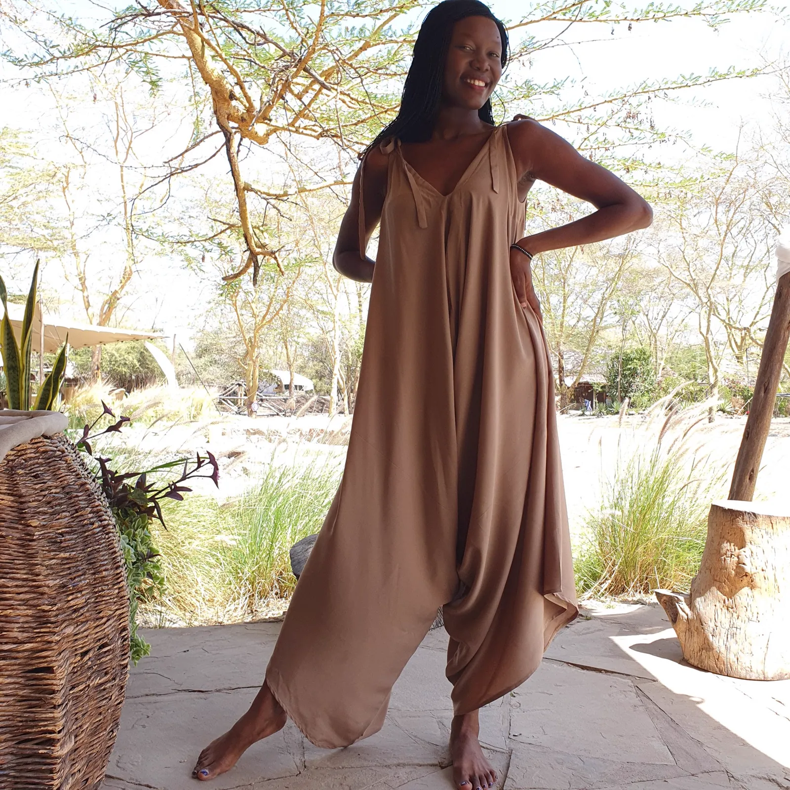
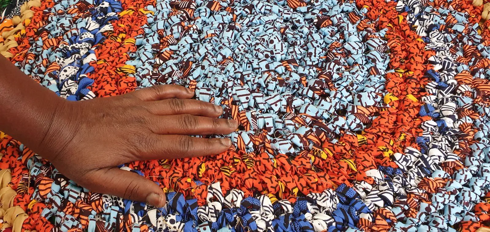

Rođeno u savani. Nijedan komad nije isti.
Odeća, nakit i dodaci, ručno rađeni u našem ateljeu u Keniji.


 Poslednji u dezenu
Poslednji u dezenu
Iz ateljea u savani
Afrička Radionica je deo Swara Design tima u srcu kenijske savane. Svaki model je ručno sečen i šiven, a batik se boji ručno, pa nijedan komad nije isti. Nakit, torbe i obuća nastaju u okolnim plemenima i ženskim udruženjima.
16% od svake prodaje izdvajamo za zaštitu divljih životinja oko ateljea.
Šivenje po meriModel, tkanina i vaše mere
Besplatna dostavaza porudžbine preko 4.000 din. u Srbiji
Plaćanje po izborukarticom, uplatom na račun ili pouzećem